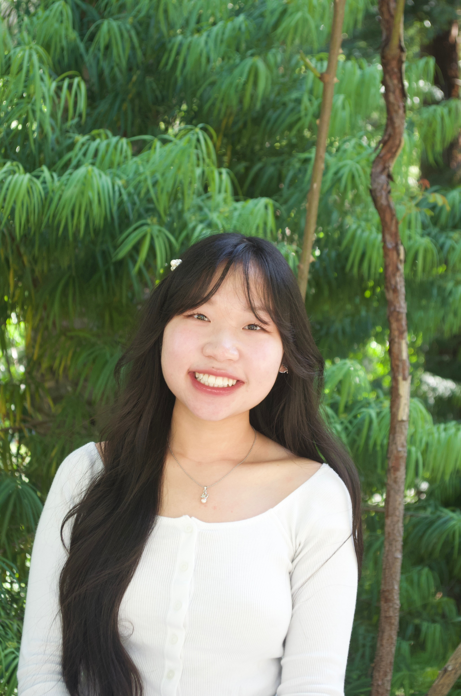

About Me

Hallie Tran is a junior Digital Media student at San José State University pursuing a Bachelor of Fine Arts in Digital Media Art. Her work focuses on visual storytelling through video production, editing, animation, writing, and marketing. Inspired by documentary media and digital content, she is interested in creating meaningful stories that connect with audiences. Through her studies, she continues to develop her skills across multiple creative disciplines and explore the ways media can inform, engage, and bring people together.
Artist statement
Earlier video work
Made before SJSU and not part of the portfolio review, but here for context:
- Lunar New Year (documentary, producer, editor, writer)
- Gaspard and Lisa Animation
- Bite of Reality (PGTV, starts at 7:22)
- Ofunga Reverses Time (animation, writer, animator, producer)